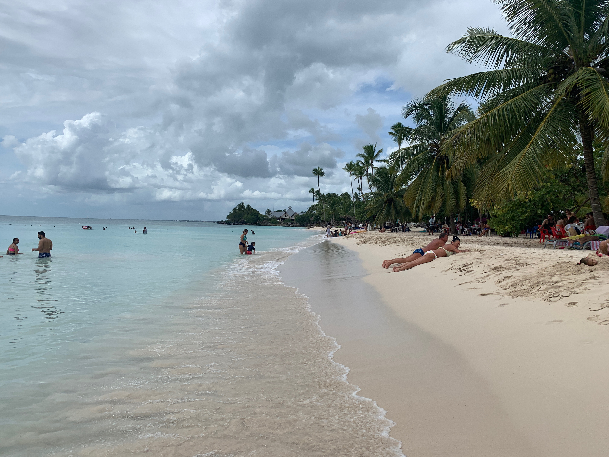
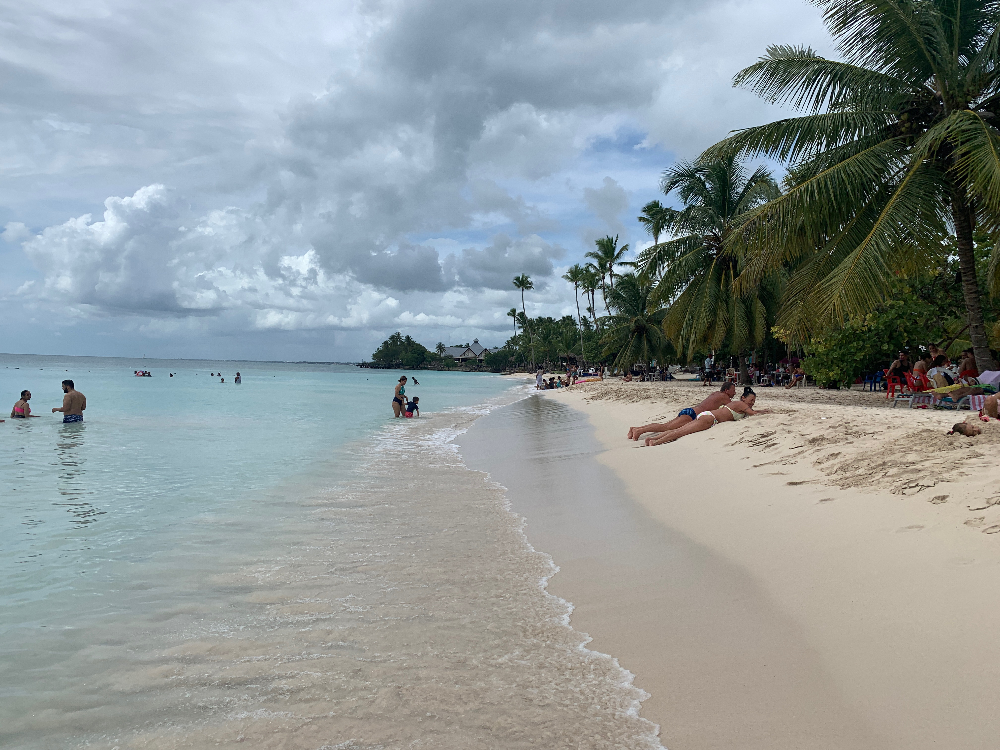
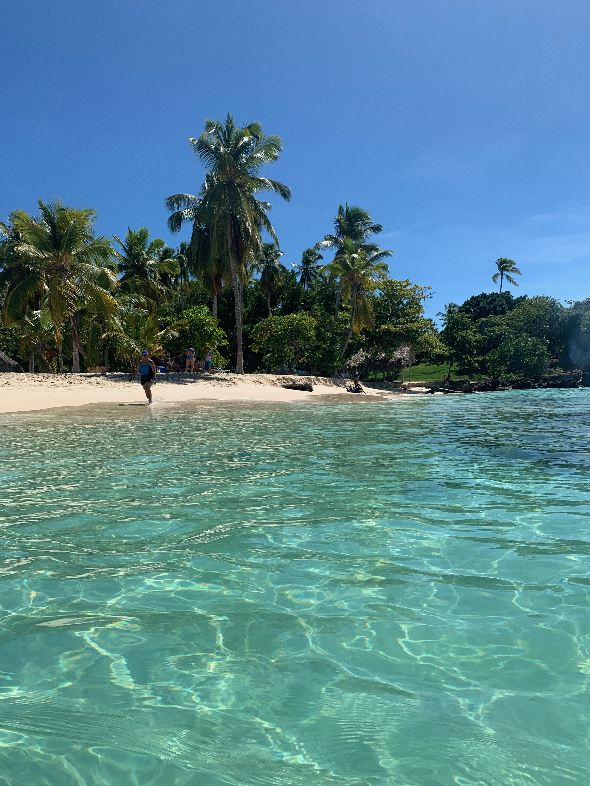

Ismerkedj és nyaralj a Dominikai Köztársaságban!
Külföldön élő magyar vagy és szívesen ismerkednél anyanyelveden?
Csatlakozz hozzánk a világ bármelyik részéről, szingli vagy páros csoportjainkhoz!
Ismerd meg velünk a Dominikai Köztársaság resortokon kívüli valódi arcát!
Ismerkedni vágyó, Magyarországon és külföldön élő magyar szingliknek és pároknak külön korhatáros csoportokban, nyaralásokat szervezünk egy csodaszép karibi szigetre, a Dominikai Köztársaságba.
Lehetőséget kínálunk nyaralni kedvelőknek ismerkedni, új barátokat szerezni vagy rátalálni akár a "Nagy Szerelemre". A szingli csoportjaink célja hogy az egyedülállók is felár kifizetése nélkül nyaralhassanak. Az egyedül érkezőnek segítünk keresni apartman társat aki azonos nemű, hasonló korú, szintén egyedül utazó.
2 hetes turnusokat indítunk külömböző csoportokkal, hasonló életkorúak részére, ezzel segítve az ismerkedést:
- vegyes csoport (25 éves kortól)
- 30 és 45 év közötti szingliknek
- 45 és 60 év közötti szingliknek
- pároknak (25 éves kortól)
- gyerekes családoknak
- kisebb baráti társaságoknak, igény szerint
Számunkra nem a mennyiség, hanem a minőség a fontos, ezért korlátozott számú csoportokat indítunk, meghatározott időturnusokban. Csomagjaink minden esetben tartalmazzák a reptéri transzfert, a magyar nyelvü aszisztenciát, valamint angol, spanyol, olasz, román és német nyelvismeretekkel rendelkezünk. Mi veletek vagyunk az érkezéstől a hazaindulásig.
Faro de Bayahibe,Dominicus
- - Magyarországon vagy külföldön élő magyar vagy? (Svájc, Ausztria, Németoraszág, Románia, Olaszország, Anglia, Spanyolország, stb.)
- - Szívesen ismerkednél saját anyanyelveden, más országokban élő magyarokkal?
- - Párban vagy? Egyedülálló, magányos, facér, özvegy esetleg elvált vagy?
- - Társat keresel vagy csak szívesen ismerkednél hasonló korosztályú emberekkel, de hol és kivel?
- - Egyedül unalmas nyaralni vagy nincs kivel utaznod?
- - Buliznál, táncolnál jókat, mint 20 évesen vagy csak feltöltődnél, kikapcsolódnál, kiengednéd a „gőzt”?
HA ISMERŐSÖK A KÉRDÉSEK, AKKOR ITT A HELYED !
CSATLAKOZZ HOZZÁNK !
Találd meg a Nagy „Ő”-t vagy egyszerűen csak ismerkedj kötelezetségek nélkül egy csodaszép Dominikai nyaraláson. Itt senki sem fog unatkozni, lehetőség van közös programokra vagy egyéni pihenésre egyaránt.
Feltételek: pozitív beállítottság, nyitottság új emeberek megismerésére, türelem és alkalmazkodás!
Bayahibe
Ami Dominikán vár:
- - fergeteges bulik, jókedv, pozitív feltöltődés, tánc és nem utolsó sorban az elengedhetetlen dominikai RUM :)
- - a merengue, bachata fülbemászó dallama azonnal rabul ejt, mely táncokat közvetlenül a helyiektől pillanatok alatt elsajátíthatsz
- - csodálatos fehér homokos tengerpartok, pálmafák, finom koktélok és természetesen A RUM :)
- - betekintés az igazi dominikai életbe
- -a helyiek nyugalma, szívből jövő kedvessége és a "dominikai életérzés"
- - közös kirándulások fantasztikus szigetekre, helyekre (pl: Catalina-sziget, Saona-sziget, Bacardi-sziget, El Limon vízesés, Punta Cana, Santo Domingo stb.)
- - baráti jellegű, közös grillezések, vacsorák, poharazgatások önköltségen, helyi árakon
- - a fehér homokos tengerparton napozás vagy csak henyélés, koktélozás, az azúr kék tengerben úszkálás, pancsolás
A Dominikai Köztársaságban számos, csodás fakultatív programok várnak benneteket:
Fakultatív programjaink egész évben, mindeki részére elérhetőek( függetlenül attól hogy nállunk van a szállása vagy sem), a lenti árakon, Bayahibe-Dominicusról való indulással!
- Saona sziget hajókirándulás 65€/Fő
- Catalina sziget hajókirándulás 65€/Fő
- Bacardi sziget és El Limón vízesés 129€/Fő
- Buggy Macao Beach-en, Punta Cana 45€/Fő
- La Hacienda kalandpark 99€/Fő
- Santo Domingo városnézés 55€/Fő
- Delphin úszás Punta Cana 129€/Fő
- Parasailing Punta Cana 65€/Fő
- Bayahibe Beach day + shopping La Romanan 35€/Fő
- Boca de Yuma kirándulás 69€/Fő
- Punta Cana Beach day 40€/Fő
- 3 napos VIP "Samaná túra" 250€/Fő
Helyi kirándulást szervező cégekkel közvetlen kapcsolatban vagyunk, így a 4-5* szállodákkal ellentétben, jóval kedvezőbb áron tudtok részt venni rajtuk. A kirándulások majdnem minden esetben tartalmaznak ebédet, üdítőt és alkoholos italt!
Saona sziget – ára 65 euro
A Saona-sziget az egyik kihagyhatatlan látnivaló a Dominikai Köztársaságba látogatók számára. Növény- és állatvilága védett, mivel a sziget a Parque Nacional del Este része. A sziget megőrzi a trópusi paradicsom minden természetes tulajdonságát: kilométernyi érintetlen partszakaszok, finom fehér homok kristálytiszta vizekkel, pálma- és kókuszfák, egzotikus növényzetű erdők, mangrove, lagúnák és egy természetes medence.
A kirándulás tartalmazza:
- - Bayahibe kikötőjéből indulunk hajóval
- - Ellátogatunk a természetes medencéhez ahol Cuba Libret szürcsölünk és tengeri csillagokkal fotózkodunk a derékig érő vízben
- - Svédasztalos BBQ ebédet fogyasztunk el a szigeten
- - Napozunk, lubickolunk
- - Zene, tánc, animáció, és nyitott bár
- -Visszatérünk katamaránnal a kikötőbe
- A kirándulás időtartama : kb 6 óra
- Min. 5 fő esetén a magyar nyelvű aszisztencia ingyenes
Catalina sziget – ára 65 euro
Catalina sziget a második top-listás kirándulás a Dominikai Köztársaságban, mely egy idilli homokfolt a Karib-tenger türkizkék vizén. Közkedvelt hely a sznorkelezők és búvárkodók számára, ahol számos trópusi halfaj és koralzátony található.
A kirándulás tartalmazza:
- - Bayahibe kikötőjéből indulunk hajóval
- - Koralzátonyt látogatunk és koccintunk Cuba Librevel
- - Snorkelezünk, felszerelés biztosítva van a hajón
- - Svédasztalos BBQ ebédet fogyasztunk el a szigeten
- - Napozunk, lubickolunk
- - Nyitott bár, zene, tánc , animáció
- -Visszatérünk katamaránnal a kikötőbe
- A kirándulás időtartama : kb 6 óra
- Min. 5 fő esetén a magyar nyelvű aszisztencia ingyenes
Bacardi sziget és El Limón vízesés – ára 129 euro
A Bacardi-szigetként is ismert Cayo Levantadon forgatták a Bacardi-reklámot. Öt kilométerre fekszik a Samaná-öböltől, ragyogó fehér homokkal és pálmákkal szegélyezett strandokkal büszkélkedhet. Az El Limón-vízesés lóháton vagy gyalogosan érhető el az őserdőn keresztül. Csobbanj egyet az édesvizű smaragd medencében a vízesés alatt, élvezd a tájat és az El Limón zúgó hangját.
A kirándulás tartalmazza:
- - Transzfer a szállástól oda-vissza, kényelmes turistabusszal, utazás kb 2 óra
- - Hajóval utazunk fél órát Samanáig
- - Szafari teherautóval folytatjuk utunkat Samanán keresztül
- - Lóháton vagy gyalog megközelítjük az El Limón vizesést ahol fürdünk egyet
- - Meglátogatunk egy tradicionális dominikai házat ahol megebédelünk
- - Hajóval ellátogatunk a Cayo Levantado szigetre (Bacardi sziget), itt strandolunk, napozunk, lubickolunk
- - Zene, tánc, animáció és nyitott bár egész nap
- A kirándulás időtartama : kb 12 óra
- Min. 5 fő esetén a magyar nyelvű aszisztencia ingyenes
Buggy Macao Beach-en – ára 45 euro
A Buggy túra Punta Canárol indul, sárgödrös utakon vezetünk és felfedezzük Macao környékének leglátványosabb tájait.

A kirándulás tartalmazza:
- -Transzfer a szállástól oda-vissza, kényelmes turistabusszal
- -Túránk a Macao térségén keresztül vezet
- -Meglátogatunk egy tradicionális dominikai házat, kávét, csokoládét és Mamajuanat kóstolunk
- -Fürdőzunk Macao barlangjában (Cenote)
- -Visszafele pedig Macao strandján lubickolunk és napozunk
- A kirándulás időtartama : kb 4-5 óra
- Min. 5 fő esetén a magyar nyelvű aszisztencia ingyenes
La Hacienda – ára 99 euro
A La Hacienda Park egy felejthetetlen kaland Punta Canán, amely magába foglal 1 kirándulás árán 7 programot: Lovaglást, Buggys túrát, Szafarit, Ziplinet, Libegőt, Bungee jumpingot és egy tradicionális dominikai ebédet.
A kirándulás tartalmazza:
- - Transzfer a szállástól oda-vissza, kényelmes turistabusszal
- -Buggyval körbejárjuk a parkot
- -Lovaglunk
- -Libegőzunk és élvezzük a kilátást
- -Szafari túrázunk
- -Bungee jumping – kipróbáljuk a szabad esést
- - Zipline-on repülünk
- -Tipikus dominikai ebédet fogunk elfogyasztani (italt nem tartalmaz az ár)
- A kirándulás időtartama : kb 6-7 óra
- Min. 5 fő esetén a magyar nyelvű aszisztencia ingyenes
Santo Domingo városnézés - ára 55euro
Santo Domingo az Új Világ legrégebbi városa, Kolumbusz Kristóf első állandó lakóhelye, Amerika “felfedezése” után, ahol számos "elsõ"-t fedezhetünk fel, mint például az elsõ székesegyházat, aszfaltozott utat, egyetemet, kórházat, kõházat, kocsmát és még sok mást.
A kirándulás tartalmazza:
- -Transzfer a szállástól oda-vissza, kényelmes turistabusszal
- -Meglátogatjuk a Los Tres Ojos Nemzeti Parkot: földalatti barlangokat és lagúnákat
- -Megfigyeljük a Columbus világítótornyot, ahol Kolumbusz Kristóf maradványai vannak eltemetve
- -A Palacio de Diego Colónhoz megyünk és az Új Világ első aszfaltútján sétálunk
- -Belépünk a Nemzeti Panteonba
- -Az Új Világ első székesegyházába látogatunk
- -Az ország lenyűgöző Nemzeti Palotája előtt fogunk elsétálni
- -Időnk lesz vásárolni, sétálni a Zona Colonial fél évezrede folyamatosan lakott utcáin. Itt a souvenireket negyed áron lehet megvásárolni
- - visszaútunk előtt a Maleconon sétálunk
- A kirándulás időtartama : kb 8-10 óra
- Min. 5 fő esetén a magyar nyelvű aszisztencia ingyenes
Delfinnekkel úszás - ára 129 euro
Ez a program Punta Canán van, amely során, felejthetetlen élményeket szerezhetsz : delfinekkel úszás, puszilkodás, ölelés .
A kirándulás tartalmazza:
- -Transzfer a szállástól oda-vissza, kényelmes túristabusszal
- - Delfinekkel úszás (személyenként 15 perc), delfin show
- A kirándulás időtartama : kb 4 óra
- Min. 5 fő esetén a magyar nyelvű aszisztencia ingyenes
Parasailing Punta Cana - ára 65 euro
Álmodtál már arról, hogy repülsz az égen? Itt a lehetőség a siklóernyőzésre ! Látványos madártávlatból élvezheted a Punta Canai kilátást, 200-250 méteres magasságból, beleértve a türkizkék vizeket és a pálmafákkal szegélyezett strandokat. A felszállás és leszállás "száraz", és a hajón történik, nem a vízen vagy a tengerparton, így biztonságos és kényelmes élményt nyújt.
A kirándulás tartalmazza:
- -Transzfer a szállástól oda-vissza kényelmes turistabuszal
- -Hajótúra
- -Festői kilátás a magasból
- -Szabadidő a tengerparton
- -Szükséges biztonsági felszerelések biztosítottak
- A kirándulás időtartama : kb 4 óra
- Min. 5 fő esetén a magyar nyelvű aszisztencia ingyenes
Bayahibe beach day– La Romana shopping – ára 39 euro
Bayahíbe-Dominicus területén található a Dominikai Köztársaság egyik leghosszabb fehér homokos strandja, amely szállásunktól 10 perces autóútra van. A turisták körében a legnépszerűbb partszakasz ahol, az Iberostar Hacienda Dominicus előtt, a csíkos világítótorony alakú bár található.
A kirándulás tartalmazza:
- -Transzfer a szállástól oda-vissza, kényelmes turistabusszal
- -Egész napot töltünk a csodaszép tengerparton
- -Shoppingolni megyünk La Romana egyik bevásárló központjába
- Min. 5 fő esetén a magyar nyelvű aszisztencia ingyenes
Boca de Yuma – ára 69euro
Ez egy rejtett paradicsom, egy szerény kis falu, amit gyönyörű strandok vesznek körül. Az egyszerű egyének és szerény munkások városa. Boca de Yuma rövid távolságra, kb 45 percnyi autóútra található a szállásunktól.
A kirándulás tartalmazza:
- -Transzfer a szállástól oda-vissza kényelmes túristabusszal
- - Sétálunk Boca de Yumán
- -Fürdőzünk a Hoyo Zumbadorban
- -Meglátogatjuk a Bernard Barlangot
- -Motorcsónakkal ellátogatunk a Playa Blancara
- A kirándulás időtartama : kb 4-5 óra
- Min. 5 fő esetén a magyar nyelvű aszisztencia ingyenes
Punta Cana Beach Day – ára 40euro
Playa Blanca, Bavaro Beach, Macao Beach
Egész napos program, ami alatt meglátogatunk 3 csodaszép partot Punta Canan.
A világhírű Bávaro strand - a Dominikai Köztársaság leghosszabb, legfolyamatosabb fehér homokos strandjai közé tartozik. 48 kilométeren át fekszik és korallzátonyokkal körülvéve, ez Punta Cana üdülőövezet legfejlettebb szakasza is. Türkizkék vizének köszönhetően ideális vízi és tengerparti tevékenységekhez, beleértve a parasailingozást, motorcsónakozást.
A Playa Blanca a Puntacana Resort & Club része, a vízi sportok, a jó ételek és a tengerparti kikapcsolódás központja. A strand mindenki számára elérhető, de 20 dollár belépődíjat kell fizetni, amely lefogyasztható a strand bárjában.
A Macao Beach egy nyilvános strand a La Altagracia tartományban, a Dominikai Köztársaság keleti régiójában. Népszerű a helyiek és a látogatók körében, fehér homokja, tiszta vizei és hullámai miatt a szörfözők számára, a kaland vágyók számára pedig tökéletes helyszin Jeep és Buggy túrákra.
A kirándulás tartalmazza:
- -Transzfer a szállástól oda-vissza kényelmes túrista busszal
- -Meglátogatjuk a Playa Blanca-t, Bavaro Beach-et és a Macao Beach-et , fürdünk, napozunk, sétálunk, fotózkodunk
- A kirándulás időtartama : kb 8-10 óra
- Min. 5 fő esetén a magyar nyelvű aszisztencia ingyenes
3 napos VIP "Samaná túra"– ára 250 euro
A túra min. 10 fő esetén érhető el, magyar aszisztenciával, 3 nap, 2 éjszaka. Ismerd meg Samaná legszebb partjait , szálj meg egy hangulatos, Afrika tematikájú medencés apartmanban és csodáld meg a napfelkeltét az Atlanti Óceán partján.
Samaná egy földi paradicsom, amelyet fehér homokos varázslatos strandjai szegélyeznek kristálytiszta türkizkék vizével, kókuszpálmákkal teli hegyekkel és csodálatos erdőkkel.
A Dominikai Köztársaság északkeleti részén fekvő félsziget, amely a világ legtöbb kókuszpálmájának ad otthont.
Számtalan turisztikai látványosságal rendelkezik, mint például Cayo Levantado, amely egy kis sziget a Samaná-öböl északkeleti részén, az El Limón, egy gyönyörű vízesés az őserdőben, Los Haitises Nemzeti Park, Playa Las Terrenas, Playa Las Galeras, Playa El Portillo, Playa Bonita, Playa Cosón, Playa Fronton, Playa Rincón stb.
A kirándulás tartalmazza:
- -Légkondicionált kisbusszal kényelmes utazás
- - 2 éjszaka szállás reggelivel az Afreeka villában , Las Terrenasban
- -Motorcsónakos utazás a Playa Frontonra (a csomag tartalmazza)
- - belépő a Dudu Lagunához (a csomag tartalmazza)
- - csodálatos partokat látogatunk meg: Playa Coson, Playa Bonita, Playa Grande Las Galeras, Playa Rincon, Playa Diamante
Tájékoztató jellegű hasznos információk a Dominikai Köztársaságba való utazáshoz:
- -A tengerpartokon igénybe vehető napozóágy és napernyő, melynek díja kb. 300,- Peso (4,- euró)/napozóágy/nap és 200,- Peso (3,- euro)/napernyő/nap.
- -A nyaralás idejére erősen ajánlott utasbiztosítást kötni!
- -Oltások nem szükségesek!
- -A csapvíz nem iható!
- -Vízum, reptéri illeték nincs!
- -Időeltolódás: -5, -6 óra
- -Fizető eszköz: dominikai peso és dollár
- -Pénzváltás: beváltható euró, dollár, svájci frank és angol font egyaránt.
- -Nem ajánlatos eurot/svájci frankot átváltani dollárra és utána dominikai pesora. (többszöri átváltási veszteségek miatt)
- -Útlevél lejárati idejét érdemes utazás előtt ellenőrizni! +6 hónap érvényességi idő szükséges!
- -Ajánlatos 3 fénymásolatot készíteni az útlevélről!
- -A sziget éghajlata trópusi monszun. Ez azt jelenti, hogy nyárias melegre lehet számítani, a nappali maximum hőmérséklet egész évben 30 fok körül alakul, az éjszakák során pedig kb 18-20 fokig hül le a levegő.
- -A tengervíz hőmérséklete is egész évben egyenlenletes, 26-29 fok között van
- -Időjárás: egész évben nyár :)
- -Fejfedő, magas faktorszámú naptej szükséges, melyeket Dominikán is meglehet vásárolni, nem érdemes velük a bőröndöt terhelni
- -Nincs szükség kabátra, csizmára, takaróra!
- -Dugalyátalakító szükséges, amelyet mi biztosítunk számotokra! (110 voltos elektromos áram)
- -Az emberekre veszélyes állatok nincsenek, de esetleg szúnyogírtó sok esetben jól jöhet
- -Az emberek életvidámak és jókedvűek. Nincs rohanás, nincs idegeskedés, csak kényszermentes élet. Nem aggódnak a jövőjükért, de a múlton se rágódnak, egyszűen a mának élnek, a holnapot holnap fogják megélni. Ebben az életben nagy szerep jut a táncnak és a zenének
- -A helyiek barátságosak, lazák, türelmesek, segítőkészek, melyet illik viszonozni!
- -Mindenki muzikális, az emberek akármikor, akárhol simán elkezdenek énekelni és táncolni
Étkezéssel kapcsolatos hasznos információk (saját képek, tapasztalatok, árak, kipróbált éttermek, kávézók, bárok)
Bayahibe-Dominicusi szállásunkon igénybe vehető európai reggeli menü 65,-Euro/13 nap.
A menü tartalmaz: kávé, üditö, palackozott víz, trópusi gyümölcs, omlett/szendvics/croissant stb.
Szeretnénk minél több ötletet, étkezési lehetőséget megmutatni nektek, melynek segitségével mindenki megtalálja a kedvére valót. Bayahibe-Dominicuson számos étterem, bár, kávézó található. Néhányat felsorolnánk ahol helyi árakon, illetve olcsón lehet finomat enni-inni. Megosztjuk veletek saját tapasztalatainkat képekben is.
- Bayahibe-Dominicuson található egy olasz kis kávézó, a Casa Bar, ahol nagyon finom reggeli, vacsora pedig 6,-euro-tól kapható. Néhány példa tájékoztatésként :
- 1 cappucino – 1 euró (70 peso)
- 1 gyümölcslé (jugo)– 1,4 euró (100 peso)
- 1 gyümölcs turmix (batida) – 1,7 euró (120 peso)
-1 meleg szendvics (2 darabos)- 2,4 euró (170 peso)
-Bayahibe-Dominicuson található D‘Manuel Pizzeria (kockás terítős kis étterem, egyik nagy kedvencünk), ahol finomabbnál finomabb pizzákat, tésztákat, halakat és tenger gyümölcseit kóstolhattok nagyon kedvező áron :
- pizzák - 5 eurótól (350 peso)
- tészták - 5 eurótól (350 peso)
- hal filé – 6,3 eurotól (450 peso)
- 1 cuba/santo libre – 2,5 euró (175 peso)
- 1 presidente sör (1liter) - 2,5 euró (175 peso)
A fenti árak már tartalmazzák a 10% szerviz és 18% áfa díjat. BÁRHOL fogyasztotok, mindig figyeljetek arra hogy az ár tartalmazza-e az áfa és szerviz díjat, mert sok esetben az étlap alján van feltüntetve, így fizetéskor meglepetést okozhat a + 28% felszámolása.
-Számos helyi bolt (colmado), európai supermarket, fodrászat, körömszalon, pénzváltó, gyógyszertár, szállásunktól pár perc sétára található
-Mi személyesen kipróbáltuk a helyi fodrászatot és körömszalont is, ahol Cuba Librevel kináltak és közben bachata zene szólt :
Lentebb találhattok pár olyan cikket amire szükségetek lesz, árral együtt, az európai supermarketből (1 euró = 70 peso): Barcelo Rum (1,75 liter) – 17 euró :)

Az oldalunkon CSAK általunk készitett filter és photoshop NÉLKÜLI képeket és videókat találhattok !!!
Bayahibe - ahol egyik szállásunk található

 



Bayahibe-Dominicus - ahol egyik szállásunk található

Saona sziget- Bayahibéről induló kirándulás


Bacardi sziget és El Limón vizesés

3 napos VIP "Samaná túra"